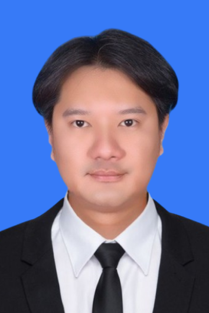

06 / RESUME
พร้อมคุยเรื่อง
งานที่มีความหมาย
ดูประวัติการทำงานฉบับเต็มได้จาก Resume PDF ภาษาไทยหรือภาษาอังกฤษ
CV / 2025TH / EN

CONTACTSKILLS
EDUCATION
COMPUTER
ENGINEERIT SUPPORT · SOFTWARE · IoT
ENGINEERIT SUPPORT · SOFTWARE · IoT